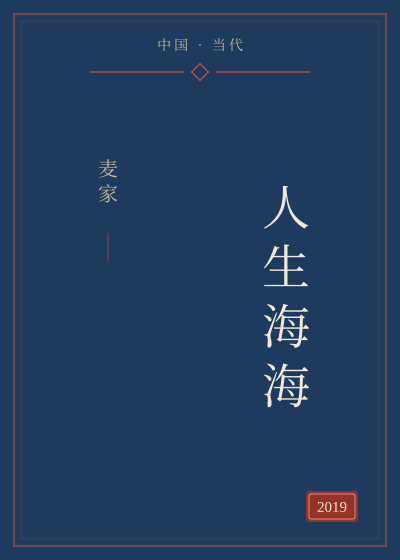
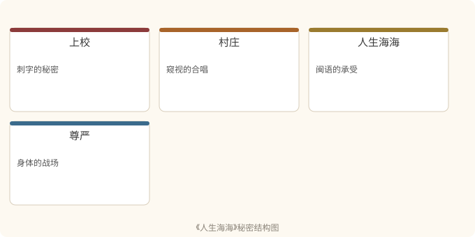

人生海海
一、基本信息
| 作者 | 麦家 |
|---|---|
| 成书/出版 | 2019年出版（通说待核；中国作家网 C026：'出版《解密》《暗算》《风声》《人生海海》等七部长篇小说'） 麦家（中国作家网会员页）（官方文学机构） |
| 国别/地区 | 中国 |
| 时代 | 现当代 · 当代 |
| 体裁 | 长篇小说 |
| 语言 | 汉语（白话） |

《人生海海》秘密结构图（主题·结构图）
二、创作背景
中国作家网会员页（C026）：'出版《解密》《暗算》《风声》《人生海海》等七部长篇小说'；'《人生海海》获第18届华语传媒文学年度杰出作家奖'（C026）。
题材（通说待核）：'上校'的传奇与秘密——乡村记忆中的人物史。
三、内容脉络
'上校'身上的刺字秘密与村庄的窥视（通说待核）。
'人生海海'：闽方言的包容与承受（书名通说）。
四、主要人物表
| 人物 | 身份 | 说明 |
|---|---|---|
| 上校 | 军医 | 秘密的承载者（通说待核） |
| 我 | 叙述者 | 村中少年（通说待核） |
五、主题与艺术特点
- 秘密与尊严（通说待核）。
- 村庄的集体窥视（通说）。
- '人生海海'的承受哲学（通说）。
六、影响与评论
- 中国作家网会员页：'《人生海海》获第18届华语传媒文学年度杰出作家奖'（C026）。
麦家（中国作家网会员页）（官方文学机构） - 中国作家网：麦家作品被译成33种语言（C026 作者级）。
麦家（中国作家网会员页）（官方文学机构）
七、阅读建议
难点
- 乡村传言的复调。
- '上校'身份的历史跨度。
- 《人生海海》（北京十月文艺出版社，通说待核）。
麦家系列之外的新作，可独立读。
八、待核实
- 2019年出版（北京十月文艺说）核对。
- '上校'人名与刺字细节核对。
- 华语传媒奖年份核对。
本页主要来源
麦家的其他收录作品：暗算